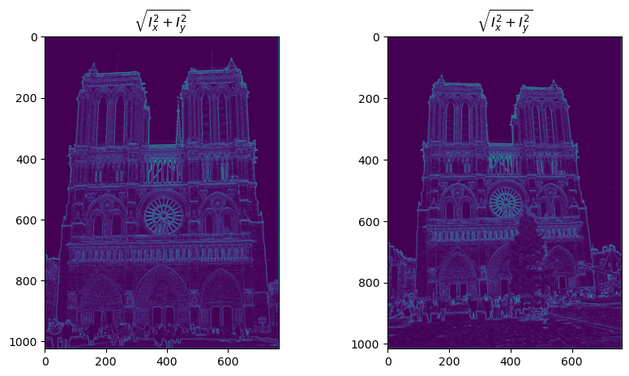
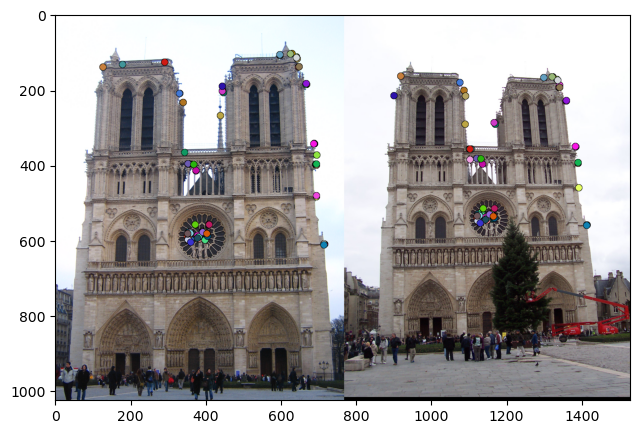
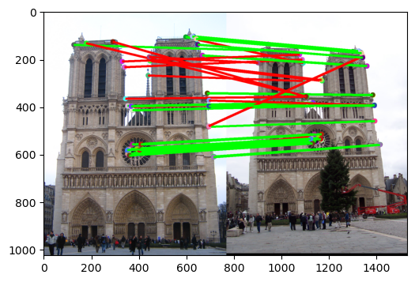

Feature matching: finding the same spot in two photos
Before a computer can stitch a panorama or rebuild a building in 3D, it has to find points that are the same in two different photos. We built that pipeline from scratch: a corner detector, a SIFT-style descriptor and a matcher, and tested it on landmark photos taken from different places and at different times.
The 30-second version
- Built: the classic pipeline for finding the same points in two photos of a place: a Harris corner detector, two kinds of feature descriptor (raw patches and a SIFT-style descriptor) and a matcher with a ratio test.
- Tested on: Notre Dame, Mount Rushmore and a Gaudí building, each photographed twice from different positions and at different times.
- Result: about 83% of the top 100 matches correct on Notre Dame with SIFT, about 61% on Mount Rushmore, and a clear failure on the Gaudí pair, which taught me the most.
Teaching a computer to say "that's the same spot"
Panoramas, 3D reconstruction and visual navigation all start the same way: find points that are clearly the same physical spot in two different photos. The photos are taken from different places, at different times, in different light. The job is to find a few thousand distinctive points in each, describe each one in a way that survives those changes, and then pair them up.
Find distinctive points
Corners, not flat walls or straight edges, because a corner looks different if you move in any direction.
Describe each one
Turn the neighbourhood around every corner into a vector of numbers.
Match
Pair each point with its nearest neighbour in the other image, but only keep the pair if it is clearly better than the second-best option.
Finding corners with Harris
The Harris detector looks at image gradients, how fast brightness changes left-right and up-down. Where both change strongly, there is a corner. I computed the gradients with Sobel filters, built the second-moment matrix from them, blurred it with a Gaussian and turned it into a single "cornerness" score per pixel. Non-maximum suppression, done with a max-pool, keeps only the strongest point in each neighbourhood.

Describing each corner
The first descriptor was the simplest possible: take the 16×16 patch of pixels around the corner and normalise it. It works surprisingly well when the two photos are similar, but it falls apart as soon as the lighting or the viewpoint shifts, because it compares raw brightness.
So we built a SIFT-style descriptor instead. For each corner, split its neighbourhood into a 4×4 grid of cells and, in each cell, make an 8-bin histogram of gradient directions weighted by their strength. That gives a 128-number fingerprint describing the shape of the edges around the point rather than their brightness, normalised so a brighter photo produces the same vector.

Matching, and checking the matches
For matching I computed the distance between every descriptor in image 1 and every descriptor in image 2, then applied Lowe's ratio test: a match only counts if the nearest neighbour is clearly closer than the second-nearest. Repeated structures like rows of windows produce lots of near-ties, and the ratio test throws those away.

Where it broke
On the Gaudí pair almost nothing matched. The two photos are at very different scales and one is much darker, and our version of SIFT was not scale- or rotation-invariant: it describes every corner at one fixed size and one fixed orientation. Real SIFT finds each point's scale and dominant direction first. Seeing that failure made it obvious why those steps exist.
What it taught me
- Describe shape, not brightness. The jump from raw patches to gradient histograms is the whole reason modern features survive lighting changes.
- The ratio test is cheap and powerful. One line of logic removed most of the false matches from repeated windows and arches.
- Failures explain the design. The Gaudí pair failing taught me more about scale invariance than any lecture.
Key terms
- interest point
- A pixel that is easy to find again in another photo; usually a corner.
- Harris detector
- A corner detector based on how image gradients vary around each pixel.
- non-maximum suppression
- Keeping only the strongest response in each neighbourhood so corners are not counted twice.
- descriptor
- A vector of numbers that describes the neighbourhood of an interest point.
- SIFT
- Scale-Invariant Feature Transform: a descriptor built from histograms of gradient directions.
- ratio test
- Accept a match only if the best candidate is much closer than the second-best.